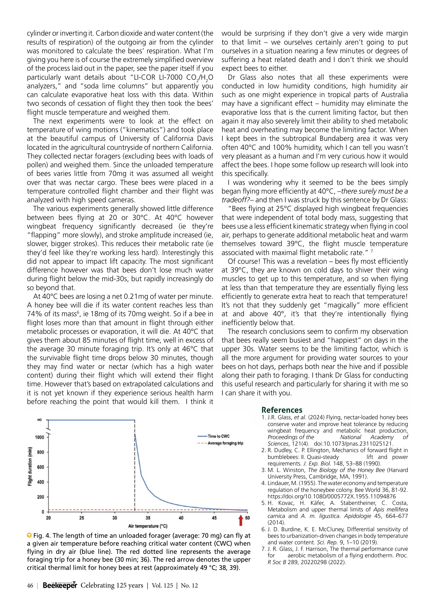

cylinder or inverting it. Carbon dioxide and water content (the
results of respiration) of the outgoing air from the cylinder
was monitored to calculate the bees’ respiration. What I’m
giving you here is of course the extremely simplified overview
of the process laid out in the paper, see the paper itself if you
particularly want details about “LI-COR LI-7000 CO2/H2O
analyzers,” and “soda lime columns” but apparently you
can calculate evaporative heat loss with this data. Within
two seconds of cessation of flight they then took the bees’
flight muscle temperature and weighed them.
The next experiments were to look at the effect on
temperature of wing motions (“kinematics”) and took place
at the beautiful campus of University of California Davis
located in the agricultural countryside of northern California.
They collected nectar foragers (excluding bees with loads of
pollen) and weighed them. Since the unloaded temperature
of bees varies little from 70mg it was assumed all weight
over that was nectar cargo. These bees were placed in a
temperature controlled flight chamber and their flight was
analyzed with high speed cameras.
The various experiments generally showed little difference
between bees flying at 20 or 30°C. At 40°C however
wingbeat frequency significantly decreased (ie they’re
“flapping” more slowly), and stroke amplitude increased (ie,
slower, bigger strokes). This reduces their metabolic rate (ie
they’d feel like they’re working less hard). Interestingly this
did not appear to impact lift capacity. The most significant
difference however was that bees don’t lose much water
during flight below the mid-30s, but rapidly increasingly do
so beyond that.
At 40°C bees are losing a net 0.21mg of water per minute.
A honey bee will die if its water content reaches less than
74% of its mass6, ie 18mg of its 70mg weight. So if a bee in
flight loses more than that amount in flight through either
metabolic processes or evaporation, it will die. At 40°C that
gives them about 85 minutes of flight time, well in excess of
the average 30 minute foraging trip. It’s only at 46°C that
the survivable flight time drops below 30 minutes, though
they may find water or nectar (which has a high water
content) during their flight which will extend their flight
time. However that’s based on extrapolated calculations and
it is not yet known if they experience serious health harm
before reaching the point that would kill them. I think it
Fig. 4. The length of time an unloaded forager (average: 70 mg) can fly at
a given air temperature before reaching critical water content (CWC) when
flying in dry air (blue line). The red dotted line represents the average
foraging trip for a honey bee (30 min; 36). The red arrow denotes the upper
critical thermal limit for honey bees at rest (approximately 49 °C; 38, 39).
would be surprising if they don’t give a very wide margin
to that limit – we ourselves certainly aren’t going to put
ourselves in a situation nearing a few minutes or degrees of
suffering a heat related death and I don’t think we should
expect bees to either.
Dr Glass also notes that all these experiments were
conducted in low humidity conditions, high humidity air
such as one might experience in tropical parts of Australia
may have a significant effect – humidity may eliminate the
evaporative loss that is the current limiting factor, but then
again it may also severely limit their ability to shed metabolic
heat and overheating may become the limiting factor. When
I kept bees in the subtropical Bundaberg area it was very
often 40°C and 100% humidity, which I can tell you wasn’t
very pleasant as a human and I’m very curious how it would
affect the bees. I hope some follow up research will look into
this specifically.
I was wondering why it seemed to be the bees simply
began flying more efficiently at 40°C, –there surely must be a
tradeoff?– and then I was struck by this sentence by Dr Glass:
“Bees flying at 25°C displayed high wingbeat frequencies
that were independent of total body mass, suggesting that
bees use a less efficient kinematic strategy when flying in cool
air, perhaps to generate additional metabolic heat and warm
themselves toward 39°C, the flight muscle temperature
associated with maximal flight metabolic rate.” 7
Of course! This was a revelation – bees fly most efficiently
at 39°C, they are known on cold days to shiver their wing
muscles to get up to this temperature, and so when flying
at less than that temperature they are essentially flying less
efficiently to generate extra heat to reach that temperature!
It’s not that they suddenly get “magically” more efficient
at and above 40°, it’s that they’re intentionally flying
inefficiently below that.
The research conclusions seem to confirm my observation
that bees really seem busiest and “happiest” on days in the
upper 30s. Water seems to be the limiting factor, which is
all the more argument for providing water sources to your
bees on hot days, perhaps both near the hive and if possible
along their path to foraging. I thank Dr Glass for conducting
this useful research and particularly for sharing it with me so
I can share it with you.
References
1. J.R. Glass, et al. (2024) Flying, nectar-loaded honey bees
conserve water and improve heat tolerance by reducing
wingbeat frequency and metabolic heat production,
Proceedings of the
National
Academy
of
Sciences, 121(4). doi:10.1073/pnas.2311025121.
2. R. Dudley, C. P. Ellington, Mechanics of forward flight in
bumblebees: II. Quasi-steady
lift and power
requirements. J. Exp. Biol. 148, 53–88 (1990).
3. M. L. Winston, The Biology of the Honey Bee (Harvard
University Press, Cambridge, MA, 1991).
4. Lindauer, M. (1955). The water economy and temperature
regulation of the honeybee colony. Bee World 36, 81-92.
https://doi.org/10.1080/0005772X.1955.11094876
5. H. Kovac, H. Käfer, A. Stabentheiner, C. Costa,
Metabolism and upper thermal limits of Apis mellifera
carnica and A. m. ligustica. Apidologie 45, 664–677
(2014).
6. J. D. Burdine, K. E. McCluney, Differential sensitivity of
bees to urbanization-driven changes in body temperature
and water content. Sci. Rep. 9, 1–10 (2019).
7. J. R. Glass, J. F. Harrison, The thermal performance curve
for
aerobic metabolism of a flying endotherm. Proc.
R Soc B 289, 20220298 (2022).
46 |
Celebrating 125 years | Vol. 125 | No. 12